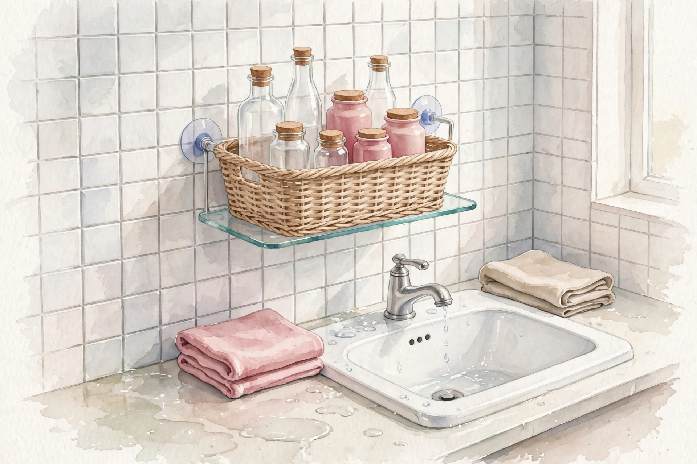
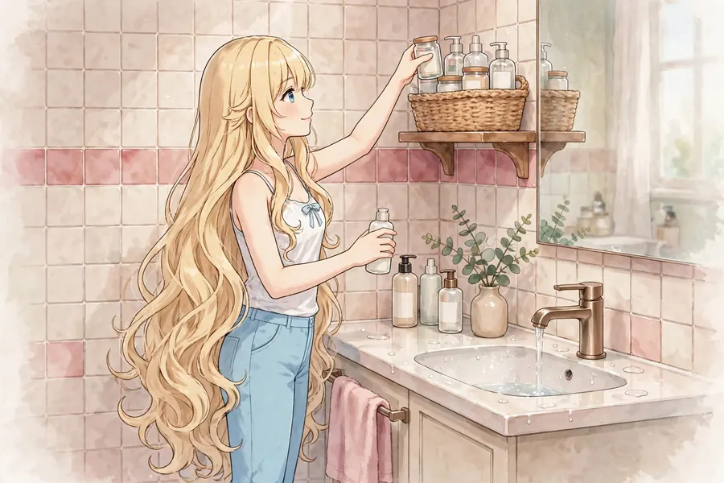

浴室・洗面所での保管場所の工夫

ボディケアアイテムの多くは、浴室や洗面所に置かれています。使う場所の近くに置くのは自然なことですが、この2か所は、水と湿気と温度変化の多い環境でもあります。この記事では、保管場所の決め方を整理します。
浴室は、使う点数を絞る場所
浴室の中は、入浴のたびに高温多湿になります。浴室に常駐させるのは、入浴中に使う数点だけに絞るのが基本です。それ以外は脱衣所や洗面所に置き、使うときだけ持って入る運用にすると、管理の心配が減ります。
浴室に置く場合も、水はねの直接当たらない、高い位置の棚を選びます。浴槽の縁は、水も湯気も当たりやすい場所です。
洗面所は、水はねと日差しを避ける位置に
洗面所では、蛇口まわりの水はねと、窓からの直射日光を避ける位置が基本です。鏡の裏の収納や、扉のある棚の中は、光も水も当たりにくく、保管に向きます。洗面台の上に並べる場合は、点数を絞り、使う順番に並べると、手順と保管が一体になります。
家族で洗面所を共有する場合は、誰のものをどこに置くか、棚の段で分けるルールを決めておくと、取り違えや置き場所の揉め事が減ります。
容器の外側の手入れも、保管の一部
容器の底や蓋のまわりは、水分が残るとぬめりやすい場所です。週に一度など区切りを決めて、容器の外側を拭き、置き場所の棚も乾かす習慣をつけると、衛生面が保てます。ポンプの口まわりも、固まった中身を拭き取る対象です。
保管は、置く場所だけでなく、置き方と手入れまで含めた設計です。点数を絞る、位置を決める、外側を拭く。この3つで、水まわりの保管は安定します。
詰め替えや移し替えをした場合の表示の扱いも、保管の一部です。小分け容器に移したものは、中身の名前と移した日付を書いておかないと、後で何だか分からなくなります。ラベルの文字が水で薄くなった容器は、油性ペンで名前を書き直すか、新しい容器に替える判断をします。来客の多い家庭では、ゲストが使う洗面所に置くものを絞っておくと、管理の範囲が明確になります。子どもの手の届く範囲には、誤って口にしそうな小さい容器を置かないことも、安全面の基本です。保管場所の工夫は、見た目の整い方のためだけではなく、家族全員が迷わず、安全に使える状態を保つための設計です。季節が変われば、使うアイテムの顔ぶれも変わります。その入れ替えのタイミングで、置き場所の割り当ても見直すと、棚の中が常に今の手順と一致した状態に保てます。保管の見直しは、手順の見直しと同時に行うのが効率的です。

セラフィナ「浴室の常駐は数点だけ。洗面所は水はねと日差しを避けて、容器の外側も拭こう」